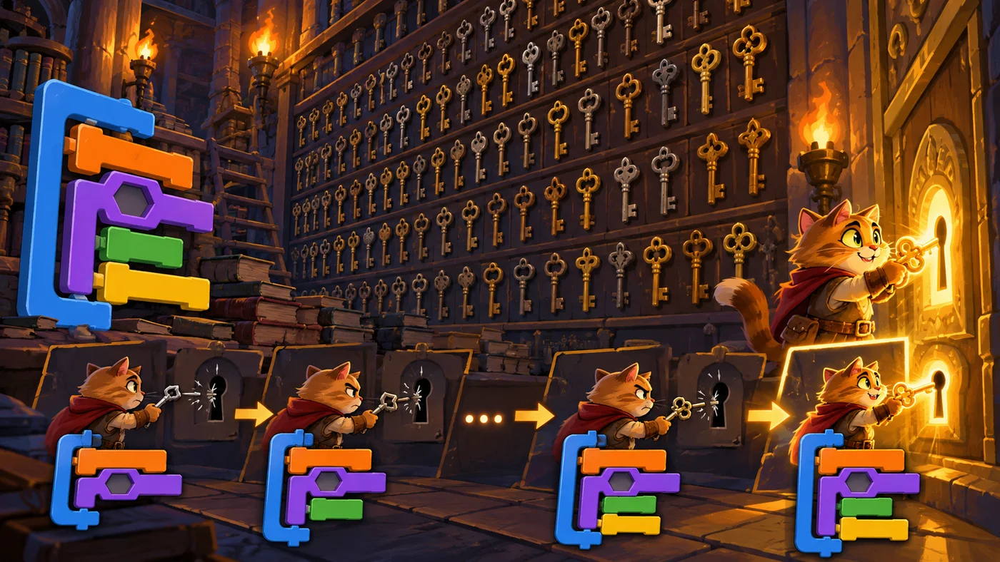
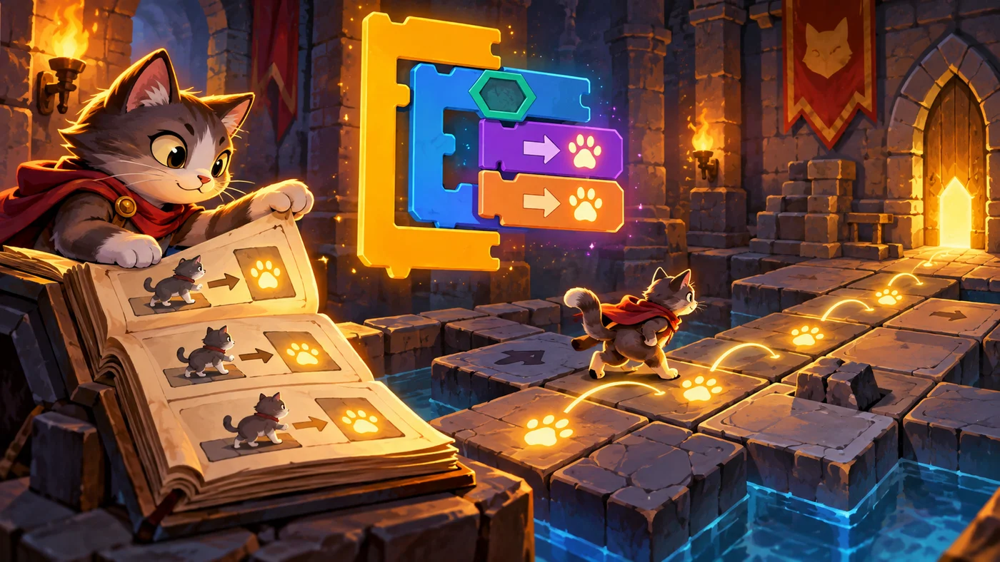
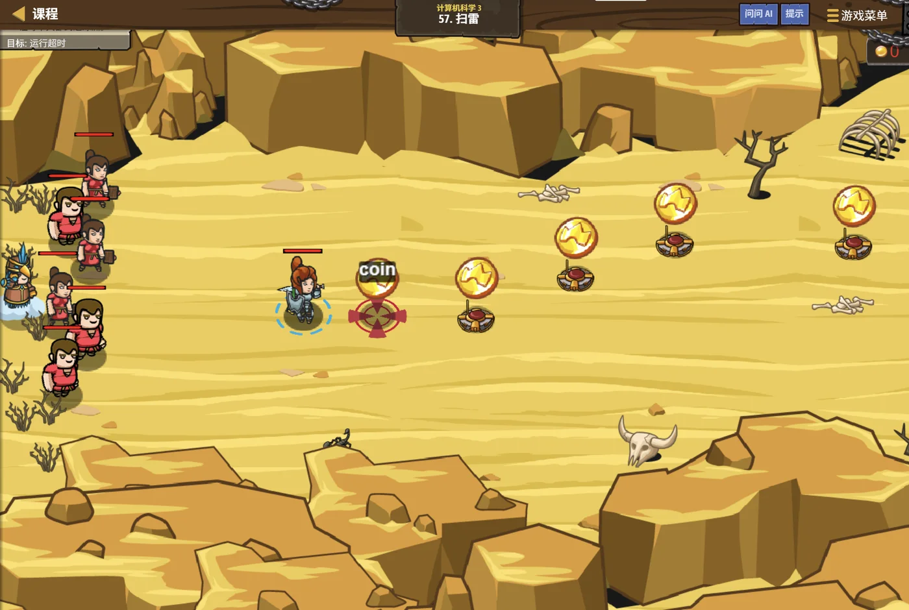

扣哒考级 · GESP 图形化 三级 · 第 7 单元 | 魔法绘本馆 STORYLOOM LIBRARY
穷举之钥 算法初步：枚举法与模拟法
Enumeration and Simulation

贺舒曼
镜中先知 · 你的向导
门后的墙上，密密麻麻挂满了钥匙，一眼望不到头。
书签没有告诉你哪一把是对的，只说了一句："一把一把试过去，别跳。"
你从最左边开始试——第十几把的时候，锁孔忽然亮了。 这就是枚举：笨，但不会漏。
书签没有告诉你哪一把是对的，只说了一句："一把一把试过去，别跳。"
你从最左边开始试——第十几把的时候，锁孔忽然亮了。 这就是枚举：笨，但不会漏。
贺舒曼 · 镜中先知
三级最后一站。这两把"钥匙"要记牢：枚举——范围写全、逐个检查、条件筛选；
模拟——规则理清、变量记状态、想好什么时候停。
0 单元导语与目标
Before We Start
0.1 学习目标
- 理解枚举法：把所有可能的情况一个一个试过去；
- 理解模拟法：照着规则一步一步往前走；
- 会用循环 + 判断写出一层枚举与多层枚举；
- 会用变量记录"现在到哪儿了"，实现模拟过程；
- 知道两种方法各自的适用场合与注意点。
0.2 考纲对照
| 考纲知识块 | 考纲要求 | 本单元小节 |
|---|---|---|
| 7 算法 | 枚举法、模拟法 | 1.1～1.2、2.1～2.3、3.1～3.3、4.1～4.2 |
| （知识点详述第 8 条） | 会应用实际的算法解决简单问题：枚举法、模拟法 | — |
这是三级最后一个知识块，也是四年级"算法"的入门。 枚举和模拟都不聪明，但都极其可靠——想不到巧办法的时候，它们总能给出答案。
1 两种最朴素的算法
Enumeration and Simulation
1.1 枚举法：把可能的都试一遍
锁孔门前挂着一整面墙的钥匙，书签说："不知道是哪一把？那就一把一把试过去。"

assets/illustrations/scratch-L3-07-01_try_every_key.webp
【配图位】一整面墙挂着上百把钥匙，一只猫一把把试过去，只有最后一把让锁孔亮起。（提示词见《GESP配图清单与AI绘图提示词》第四节 3-7）
图 2（SVG）：枚举法的三个关键词
打个比方：枚举就像找钥匙——你虽然不知道是哪一把，但只要钥匙一共就那么多，一把把试过去总能找到。
它"笨"，但它永远不会漏。
它"笨"，但它永远不会漏。
1.2 模拟法：照规则一步步走

assets/illustrations/scratch-L3-07-02_simulate_reading.webp
【配图位】一只猫照着规则一页页翻书——每翻一页就在地图上走一格，地板上留下编号的发光脚印。（提示词见《GESP配图清单与AI绘图提示词》第四节 3-7）
图 4（SVG）：模拟法的三个关键词
两种方法的区别：枚举是"在可能性里搜答案"，模拟是"把过程演一遍看结果"。
题目问"一共有几种方案"多半用枚举；题目问"走完之后会怎样"多半用模拟。
题目问"一共有几种方案"多半用枚举；题目问"走完之后会怎样"多半用模拟。
2 枚举法怎么写
Writing Enumeration
2.1 一层枚举
重点示例：找出 1 到 20 里所有的偶数
图形化积木
读法 "数字"从 1 走到 20，每个都检查一次"是不是偶数"，是就报出来——一层循环 + 一个判断
2.2 多层枚举
重点示例：两层枚举，列出所有组合
图形化积木
要点 a 每变一次，b 都要从头走一遍——这就是"把两个数所有搭配都试一遍"
2.3 用条件筛出答案
图 5（SVG）：枚举法的四步
范围要写全：求 n 的因数时，要从 1 试到 n 自己——写成"1 到 n − 1"就会把 n 漏掉，而 n 永远是 n 的因数。
这是枚举题最常见的失分点。
这是枚举题最常见的失分点。
3 模拟法怎么写
Writing Simulation
3.1 按规则往前走
重点示例：每一步都按规则动一次
图形化积木
读法 循环一次就"按规则走一步"，同时用变量记下"走了多少步"
3.2 用变量记录状态
图 6（SVG）：模拟里的状态变量
3.3 什么时候停下
图 7（SVG）：模拟什么时候停
模拟法的实用写法："重复执行直到 条件"最贴近真实过程——每走一步就看一眼"到了吗"，没到就继续。别忘了在循环里改状态变量，否则会永远走不完。
4 两种方法怎么选
Which to Choose
4.1 枚举的范围要写全
图 8（SVG）：选哪种方法
4.2 模拟的规则要理清
图 9（SVG）：写模拟前的三步准备
打个比方：枚举像翻字典找字——一页页翻过去，总能翻到；
模拟像下棋——每一步都按规则走，走到最后才知道输赢。
模拟像下棋——每一步都按规则走，走到最后才知道输赢。
5 代码实战
Level Practice
这一关是模拟法最典型的场景：看不到全局，只能按当前情况一步步反应。
关卡
扫雷
进入关卡 →
故事：
雷区横在绘本馆外的必经之路上，你看不到雷在哪儿，
但每走一步都能"感觉到"周围有没有雷——根据当下的感觉决定下一步怎么走。

assets/stages/py-L3-07-stage1_minesweeper.webp
【关卡截图位】请把《扫雷》的游戏画面截图放到此处（放入 assets/stages/ 目录，文件名为 py-L3-07-stage1_minesweeper.webp）。
思路：每一轮都做同一件事：检查当前状态 → 按规则做一个动作。 不看长远、只处理当下——这正是模拟法的核心。
重点示例：检查状态，按规则行动
图形化积木
读法 "重复执行直到碰到红色"——每走一步先看一眼，安全就往前走，遇到绿色就拐弯；同时用变量记下一共走了几步
自己试一试：把"重复执行直到"换成"重复执行 30 次"再跑一次：体会"条件决定停"和"次数决定停"的区别。
这一关把两种方法都用上了：' '模拟负责"一步步走"，判断负责"每一步怎么走"，' '而"走了几步"由变量记着——这就是三级综合题的标准结构。
为什么题目里常有"最多走 N 步"？那是给模拟加一个刹车——防止万一规则写得不对，程序陷入永远走不完的死循环。
去扣哒世界闯这一关 →
6 常见陷阱
Common Traps
陷阱 1：枚举范围少了一个。求因数时写成"1 到 n − 1"，把 n 自己漏掉了。
正确做法：数一数范围的两头——"从 1 到 n"一共要走 n 次。
正确做法：数一数范围的两头——"从 1 到 n"一共要走 n 次。
陷阱 2：枚举时忘了改循环变量。循环转了很多次，但每次都检查同一个数。
正确做法：循环末尾一定要"将数字增加 1"。
正确做法：循环末尾一定要"将数字增加 1"。
陷阱 3：模拟里忘了更新状态变量。规则里说"走一步就前进一格"，却没改位置，结果"重复执行直到到达终点"永远不成立。
正确做法：每一步都要让状态变量跟着变。
正确做法：每一步都要让状态变量跟着变。
陷阱 4：用"一直重复"做模拟。没有停止条件，程序会一直跑下去。
正确做法：模拟一定想清楚"什么时候停"——要么限定次数，要么用"重复执行直到"。
正确做法：模拟一定想清楚"什么时候停"——要么限定次数，要么用"重复执行直到"。
7 题目练习
Practice
第 1 题改编自 2026 年 6 月 · 图形化编程 三级 第 15 题，其余为原创练习题。
改编自 2026 年 6 月 · 图形化编程 三 级 · 第 15 题单选题
下面四个问题中，不适合使用枚举算法的是（ ）。
A.试出三位数密码锁的秘密
B.在 1 到 100 之间找出所有个位和十位数字相同的两位数
C.计算小杨期末考试语文、数学、英语三科的平均分
D.在一幅打乱的扑克牌中找出所有花色为红桃的牌
B.在 1 到 100 之间找出所有个位和十位数字相同的两位数
C.计算小杨期末考试语文、数学、英语三科的平均分
D.在一幅打乱的扑克牌中找出所有花色为红桃的牌
查看答案与详解
答案：C。枚举法的用法是"在一大堆可能的答案里，一个一个试过去"。
· A：密码有 001～999 共 999 种可能 → 可以逐个试；
· B：1 到 100 逐个看过去，筛出符合位数的 → 典型枚举；
· D：整幅牌一张张翻过去挑红桃 → 典型枚举；
· C：三科成绩加起来除以 3，一步就算出来了，根本没有"一大堆可能"要试——用枚举是白费力气。
判断口诀：问自己一句"答案是不是要在一堆可能里挑出来"，不是的话就不该用枚举。
对应小节1.1、4.1 什么时候用枚举。
· A：密码有 001～999 共 999 种可能 → 可以逐个试；
· B：1 到 100 逐个看过去，筛出符合位数的 → 典型枚举；
· D：整幅牌一张张翻过去挑红桃 → 典型枚举；
· C：三科成绩加起来除以 3，一步就算出来了，根本没有"一大堆可能"要试——用枚举是白费力气。
判断口诀：问自己一句"答案是不是要在一堆可能里挑出来"，不是的话就不该用枚举。
对应小节1.1、4.1 什么时候用枚举。
原创练习题单选题
要用枚举法找出 1 到 50 之间所有能被 3 整除的数。下面哪种循环范围的写法正确（ ）。
A.从 1 试到 49
B.从 1 试到 50
C.从 3 试到 50
D.只试 50 一个数
B.从 1 试到 50
C.从 3 试到 50
D.只试 50 一个数
查看答案与详解
答案：B。题目要求"1 到 50 之间"，所以两头都要含进去，一共试 50 个数。
A 错：漏掉了 50（而 50 虽然不能被 3 整除，但"范围写全"是枚举法的基本要求，不能靠运气省）；
C 错：漏掉了 1 和 2；
D 错：只试一个数，不是枚举。
对应小节2.1、4.1 枚举的范围。
A 错：漏掉了 50（而 50 虽然不能被 3 整除，但"范围写全"是枚举法的基本要求，不能靠运气省）；
C 错：漏掉了 1 和 2；
D 错：只试一个数，不是枚举。
对应小节2.1、4.1 枚举的范围。
原创练习题单选题
一段枚举脚本用"数字"变量从 1 走到 10，逐个检查是否满足条件。如果忘了在循环末尾写"将数字增加 1"，会发生什么（ ）。
A.循环次数变少
B.每次检查的都是同一个数
C.程序会报错
D.结果不变
B.每次检查的都是同一个数
C.程序会报错
D.结果不变
查看答案与详解
答案：B。循环会照转 10 次，但"数字"一直是 1——等于把同一个数检查了 10 遍，后面的 2 到 10 一个都没试到。
A 错：次数是由"重复执行 10 次"决定的，不会变少；
C 错：图形化编程不会因此报错，只会默默算错；
D 错：结果一定不对。
对应小节2.1 一层枚举。
A 错：次数是由"重复执行 10 次"决定的，不会变少；
C 错：图形化编程不会因此报错，只会默默算错；
D 错：结果一定不对。
对应小节2.1 一层枚举。
原创练习题单选题
角色要沿着一条路线往前走，直到碰到红墙为止，并且要记下总共走了几步。下面哪种结构最合适（ ）。
A.重复执行 10 次：{ 移动 1 步 }
B.重复执行直到 碰到红色？：{ 移动 1 步 ; 步数增加 1 }
C.一直重复：{ 移动 1 步 }
D.如果 碰到红色？ 那么 { 移动 1 步 }
B.重复执行直到 碰到红色？：{ 移动 1 步 ; 步数增加 1 }
C.一直重复：{ 移动 1 步 }
D.如果 碰到红色？ 那么 { 移动 1 步 }
查看答案与详解
答案：B。这是典型的模拟："不知道要走几步、但知道什么时候停"，所以用"重复执行直到"，并在循环里同步更新"步数"这个状态变量。
A 错：次数写死了，可能没走到墙就停、也可能撞墙了还在走；
C 错："一直重复"永远不会自己停；
D 错：判断只检查一次，而且逻辑是"碰到才走"，正好反了。
对应小节3.1、3.3 模拟法的写法。
A 错：次数写死了，可能没走到墙就停、也可能撞墙了还在走；
C 错："一直重复"永远不会自己停；
D 错：判断只检查一次，而且逻辑是"碰到才走"，正好反了。
对应小节3.1、3.3 模拟法的写法。
原创练习题多选题
关于枚举法和模拟法，下面说法哪些是正确的（ ）。
A.枚举法要先把可能的范围确定下来
B.模拟法要用变量记录"现在到哪儿了"
C.枚举法和模拟法都不可能在有限时间内结束
D.题目问"一共有多少种方案"，通常适合用枚举法
B.模拟法要用变量记录"现在到哪儿了"
C.枚举法和模拟法都不可能在有限时间内结束
D.题目问"一共有多少种方案"，通常适合用枚举法
查看答案与详解
答案：A、B、D。
C 错：这两种方法都是可行且会结束的——枚举的范围是有限的，模拟的循环也有次数或条件来收口。它们"笨"，但绝不会永远转下去（除非你忘了写停止条件）。
对应小节1.1、1.2、4.1 两种方法的特点。
C 错：这两种方法都是可行且会结束的——枚举的范围是有限的，模拟的循环也有次数或条件来收口。它们"笨"，但绝不会永远转下去（除非你忘了写停止条件）。
对应小节1.1、1.2、4.1 两种方法的特点。
原创练习题判断题
在图形化编程中，用枚举法找"1 到 100 之间所有能被 3 整除的数"，需要一个循环逐个走过 1 到 100，再用判断筛出符合条件的数。（ ）
查看答案与详解
答案：正确（√）。这正是枚举法的标准结构：循环负责"走遍范围"，判断负责"筛出答案"。
写的时候注意两点：范围两头都要含（1 到 100 共 100 个数）、循环里别忘了让数字加 1。
对应小节2.1～2.3、4.1 枚举法。
写的时候注意两点：范围两头都要含（1 到 100 共 100 个数）、循环里别忘了让数字加 1。
对应小节2.1～2.3、4.1 枚举法。
8 本单元小结
Unit Summary
贺舒曼 · 镜中先知
三级到这里就通关了。最后这两把钥匙记住就好：枚举法——确定范围、逐个走、条件筛选；
模拟法——理清规则、用变量记状态、想好什么时候停。
你在钥匙墙前学到了什么
- 枚举法：范围 + 逐个 + 筛选（循环走遍，判断挑出）；
- 多层枚举：a 每变一次，b 都从头走一遍，把所有搭配试全；
- 模拟法：规则 + 状态 + 停止（按规则走，用变量记，想好何时停）；
- 状态变量：位置、计数、标记，是模拟的三样必备；
- 怎么选：问"几种方案"用枚举，问"过程结果"用模拟。
三级通关，前面是机械乐园
三级的知识到这里就齐了：输入输出、字符串、列表、克隆进阶、嵌套、复杂逻辑、枚举与模拟。
再往上是四级 · 机械乐园——那里有会自己干活的函数、
一台台排序机器，还有把整条流水线串起来的模块化搭建。